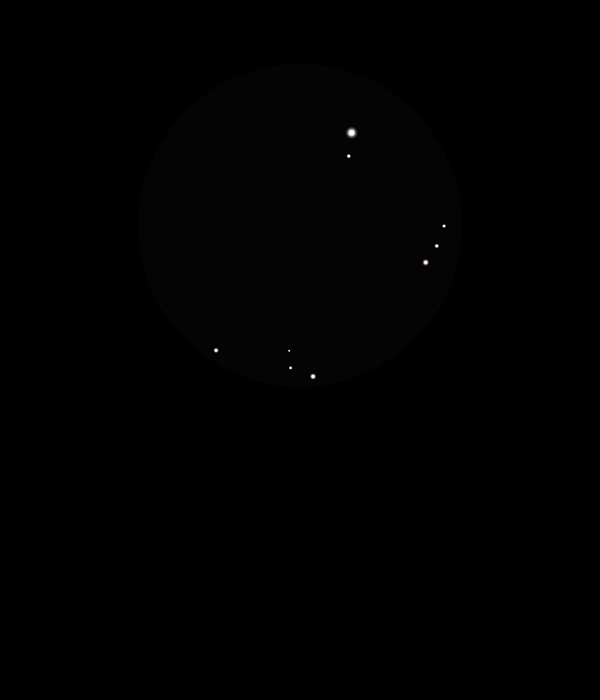

NGC 5466
Globular Cluster in Bootes
NGC 5466
Mag 10.5
GC class
XII
21/04/15
Completly the opposite of M3, viewed before it
This Globular Cluster is barley visible in 12mm, just a hazy,
very faint blob caught in odd moments using inverted vision and
slowly moving the FOV to detect the haze
12/05/15
Sits in a neat starfield close to HIP 68955 at Mag 6.85 and
above a row of three stars of Mags 10.05, 10.70 and 11.00 in
25mm and 12mm FOVs
Very faint haze, nothing resolved but this could be
because the sky is not yet truly dark at 22:59!